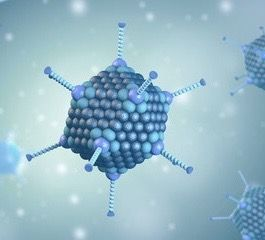
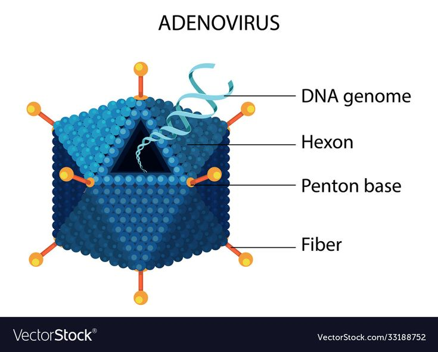
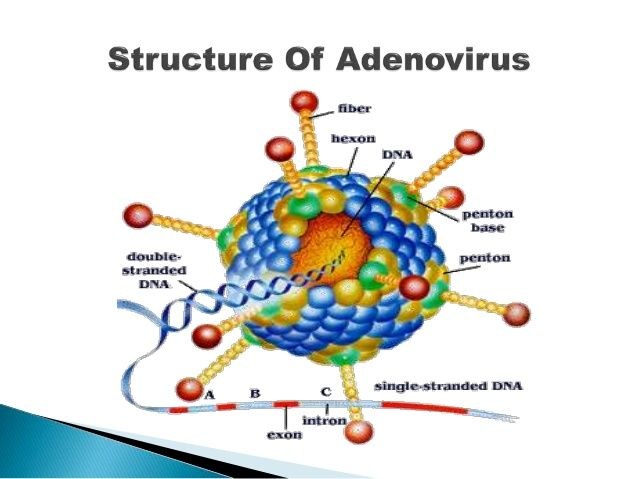

Adenovirus adalah jenis virus yang menyebabkan infeksi pada saluran pernapasan, pencernaan, dan paru-paru. Virus ini dapat menyerang siapa saja, tetapi lebih sering menyerang anak-anak.
Adenovirus memiliki kemampuan unik untuk menginfeksi berbagai jaringan dalam tubuh manusia. Virus ini menyebabkan berbagai gejala mulai dari infeksi ringan hingga penyakit serius pada individu dengan sistem kekebalan yang melemah.

Gambar 1. Contoh Virus (Adenovirus).
Struktur dan Fungsi Adenovirus
1. Hekson (Hexon): Protein struktural utama yang menyusun 20 sisi kapsid.
2. Penton Base (Dasar Penton): Unit protein di 12 sudut kapsid, berperan penting dalam perlekatan virus ke sel inang.
3. Fiber (Serat): Proyeksi ramping seperti jarum dari setiap penton base, membantu virus menempel ke sel target.
4. Knob Domain (Domain Kenop): Bagian ujung protein fiber yang menyerupai kenop atau bola, mengikat reseptor sel inang.
5. DNA Genome (Genom DNA): Materi genetik virus berupa DNA untai ganda linear, dilindungi protein inti.

Gambar 2. Diagram struktur adenovirus.
Struktur dan Karakteristik Virus
1. Jenis Virus: Adenovirus adalah virus DNA untai ganda (double-stranded DNA/dsDNA) yang tidak beramplop (non-enveloped).
2. Ukuran dan Bentuk: Berukuran sedang, sekitar 70 hingga 100 nm, dan memiliki kapsid protein berbentuk ikosahedral (dua puluh sisi).
3. Stabilitas: Adenovirus dikenal sangat stabil terhadap agen kimia atau fisik, serta kondisi pH yang merugikan. Karakteristik ini memungkinkan virus bertahan lama di luar tubuh inang dan di air.
4. Serotipe: Terdapat lebih dari 100 serotipe (jenis yang berbeda secara imunologis) dari adenovirus, dengan sekitar 49 hingga 50 jenis di antaranya diketahui dapat menginfeksi manusia. Serotipe yang berbeda dapat menyebabkan penyakit pada bagian tubuh yang berbeda..

Gambar 3. Struktur dan karakteristik Adenovirus.
Penularan Adenovirus
1. Kontak Langsung: Menyentuh orang terinfeksi atau sekresi mereka.
2. Droplet Pernapasan: Menghirup percikan air liur saat batuk/bersin/orang berbicara.
3. Fekal-Oral: Menyebar melalui tinja, misal saat mengganti popok.
4. Permukaan Terkontaminasi: Menyentuh benda/permukaan terkontaminasi, lalu mata/hidung/mulut.
5. Air (Jarang): Terkadang melalui air tidak diklorinasi cukup.
Manifestasi Klinis (Penyakit Yang Ditimbulkan)
Gejala infeksi adenovirus bervariasi tergantung pada serotipe virus dan organ tubuh mana yang terinfeksi. Infeksi biasanya terjadi 2 hingga 14 hari setelah paparan.
1. Saluran Pernapasan (Paling umum) : Flu biasa, Faringitis (radang tenggorokan), Bronkitis, Pneumonia (radang paru-paru), Croup, Penyakit Pernapasan Akut (sering terjadi pada rekrutan militer).Demam, batuk, pilek, hidung tersumbat, sakit tenggorokan, nyeri otot, sakit kepala, sesak napas.
2. Mata: Konjungtivitis folikular akut (mata merah), Keratokonjungtivitis epidemik (infeksi mata yang sangat menular, sering menyebabkan kerusakan kornea). Mata merah, berair, gatal, sensitif terhadap cahaya.
3. Saluran Pencernaan: Gastroenteritis (radang lambung dan usus) seperti mual, muntah, kram perut, diare berair (terkadang parah).
4. Saluran Kemih: Sistitis Hemoragik (radang kandung kemih dengan hematuria/kencing berdarah). Nyeri saat buang air kecil, sering buang air kecil, kencing berdarah.
5. Lainnya: Hepatitis (terutama pada kasus hepatitis akut misterius pada anak-anak), Meningitis atau Ensefalitis (jarang, menyerang sistem saraf pusat), Penyakit pada hati, dan Infeksi yang menyebar (diseminata) pada pasien yang mengalami gangguan kekebalan.Gejala bervariasi sesuai organ yang diserang.
Kelompok Berisiko Tinggi
1. Anak-anak di bawah usia 5 tahun, sering terjadi di tempat penitipan anak.
2. Orang yang tinggal di lingkungan tertutup atau padat, seperti rekrutan militer atau mahasiswa.
3. Individu dengan sistem kekebalan tubuh yang lemah (imunokompromais), seperti pasien transplantasi, penderita HIV, atau orang yang mengonsumsi obat imunosupresif. Kelompok ini berisiko tinggi mengalami penyakit parah dan komplikasi fatal.
Pengobatan dan Pencegahan
Pengobatan:
1. Tidak ada obat antivirus spesifik yang disetujui untuk pengobatan infeksi adenovirus.
2. Sebagian besar infeksi bersifat ringan dan dapat sembuh sendiri (self-limiting) dengan perawatan suportif.
3. Perawatan suportif meliputi: istirahat yang cukup, menjaga asupan cairan, dan penggunaan obat pereda nyeri atau penurun demam (paracetamol/ibuprofen).
4. Pada kasus parah, terutama pada pasien imunokompromais, rawat inap mungkin diperlukan.
Pencegahan:
1. Mencuci tangan secara teratur dengan sabun dan air mengalir, terutama setelah mengganti popok atau kontak dengan orang sakit.
2. Hindari kontak dekat orang sakit.
3. Menutup mulut saat batuk atau bersin, dan membuang tisu bekas.
4. Bersihkan/disinfeksi permukaan sering disentuh.
5. Vaksin tersedia untuk serotipe tertentu (tipe 4 dan 7) dan saat ini hanya digunakan untuk personel militer di Amerika Serikat.
Kesimpulan
Adenovirus merupakan virus DNA kompleks dengan struktur khas dan berbagai fungsi protein penyusunnya. Pemahaman penting untuk pengembangan vaksin dan terapi medis.